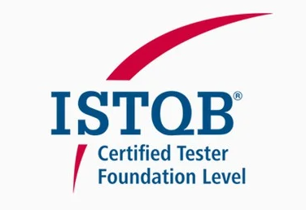
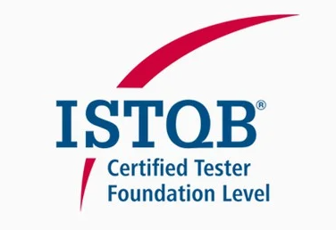

Software a Medida que Impulsa tu Negocio
Construimos aplicaciones web robustas, escalables y seguras, diseñadas para optimizar tus operaciones y darte una ventaja competitiva real.
Hablemos de tu proyectoUn Socio Tecnológico para cada Etapa
Desarrollo de Software a Medida
Diseñamos y construimos software a medida, desde MVPs hasta plataformas empresariales, alineando arquitectura, rendimiento y experiencia de usuario desde el primer día. Nuestro enfoque prioriza código mantenible, escalabilidad real y decisiones técnicas que soporten el crecimiento de tu negocio a largo plazo.
Automatización y Calidad de Software (QA)
Integramos la calidad como parte del proceso, no como una etapa final. Implementamos pruebas automatizadas, validaciones continuas y buenas prácticas de QA para reducir riesgos, prevenir errores críticos y asegurar un software confiable en producción desde la primera entrega.
Integración de APIs y Sistemas
Diseñamos e integramos APIs y sistemas distribuidos para conectar tus plataformas existentes —CRMs, ERPs, pasarelas de pago y servicios externos— en un ecosistema coherente, seguro y automatizado. Eliminamos fricción operativa y convertimos los datos en un activo estratégico.
Nuestra relación no termina con la entrega. Ofrecemos un partnership de soporte y mantenimiento para asegurar la evolución y el rendimiento continuo de tu aplicación.
Proyectos Destacados
Dashboard de Analíticas para SaaS
Problema: Un cliente SaaS necesitaba ofrecer a sus usuarios un panel de control intuitivo y rápido para visualizar métricas de negocio complejas en tiempo real.
Solución: Diseñamos y desarrollamos una Single-Page Application (SPA) con un backend optimizado para consultas de alto rendimiento y una interfaz interactiva con gráficos dinámicos.
Sistemas CRUD y Gestión de Datos
Problema: Una empresa requería una herramienta interna robusta para gestionar un gran volumen de registros, con capacidades avanzadas de búsqueda, filtrado y edición de datos.
Solución: Desarrollamos una aplicación web segura con un panel de control que permite operaciones CRUD (Crear, Leer, Actualizar, Borrar), incluyendo filtros dinámicos y exportación de datos.
Módulo de Seguridad y Acceso al Sistema
Problema: Una aplicación de negocio carecía de un sistema de autenticación moderno, lo que exponía datos sensibles y ofrecía una mala experiencia de usuario.
Solución: Implementamos un módulo de autenticación desde cero, utilizando JSON Web Tokens (JWT), gestión de roles y permisos, y un flujo seguro de recuperación de contraseñas.
Un Socio Tecnológico, no un simple Proveedor
Innovexo Labs es un estudio de desarrollo donde la excelencia técnica y la comunicación directa son la base. Liderado por Christian Lopez Baya, combinamos años de experiencia en desarrollo full-stack con una mentalidad DevOps y un background en QA para construir soluciones que no solo funcionan, sino que perduran y escalan.
No somos una gran corporación; somos un equipo ágil de solucionadores de problemas, dedicados a entender tus desafíos de negocio y a traducirlos en resultados tecnológicos tangibles.
Credenciales y Confianza
Nuestra práctica técnica está validada por certificaciones clave de la industria. Este compromiso con los estándares de calidad, seguridad en la nube y metodologías de testing nos permite construir software robusto y fiable.
 

Un enfoque en la calidad, la seguridad y la escalabilidad.
¿Listo para Construir tu Proyecto?
Si tienes una idea o un desafío técnico, hablemos. Agenda una llamada sin compromiso para explorar cómo podemos trabajar juntos.
clopezbaya@gmail.comAgendemos una llamada de 15 minutos.